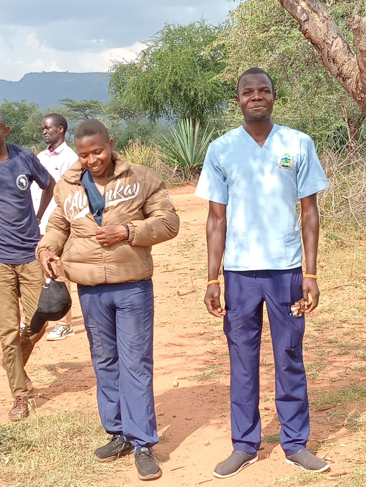
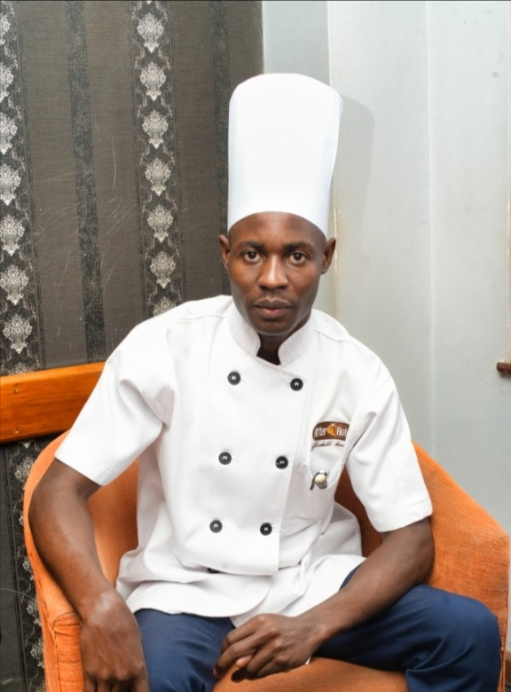

Empowering Education &
Hope in Shinyalu,
Kakamega
Building brighter futures through education,
skills training, and community support

Students

Healthcare

Culinary Skills
Building brighter futures through education,
skills training, and community support
Students
Healthcare
Culinary Skills
Community-based NGO in Shinyalu, Kakamega. Founded by Boniface Libuku Museni KMTC Siaya 2016 HRIMB RE-000053W AMRO-K 0337. Managing KSh 5,234,937+ since 2018 for 31+ students. Proven graduates: BScN Nurse + Chef.

➡️ RIGHT in light blue scrubs: Cetrick Kamina, Registered BScN Nurse | Uzima University | KSh 700,000 Investment
UZIMA UNIVERSITY | REGISTERED BScN NURSE
My name is Cetrick Kamina. I come from Shinyalu Constituency, Kakamega County, Kenya. Today, I stand proud as a Registered BScN Nurse. But to understand the magnitude of this achievement, you must first understand the journey that brought me here.
There was a time when my dream of pursuing higher education felt like a distant, impossible reality. Like many bright students in my community, I faced the daunting barrier of school fees. The gap between my potential and my ability to pay for my education was wide, and it threatened to close the door on my future.
Then, EducationCHV stepped in. They didn't just offer financial assistance; they offered me a lifeline. Through their sponsorship, I was able to navigate the critical years of my secondary education and successfully transition into university. They believed in me when I needed it most, providing the foundation upon which I could build my career.
University was challenging, but knowing that I had a community of supporters behind me pushed me to work harder. I poured my heart into my studies, determined to make the most of the incredible opportunity I had been given.
Today, that hard work has paid off. I am a fully registered Bachelor of Science in Nursing (BScN) graduate. Every day, I put on my scrubs and step out into the field—often right back in the rural landscapes where I grew up—ready to serve. Whether I am holding a radio to coordinate community health efforts or attending to patients, I carry with me a deep sense of purpose.
My story is proof that talent is everywhere, but opportunity is not. When you sponsor a child, you are not just paying school fees. You are unlocking a future. You are giving a community a future nurse, teacher, engineer, or leader.
To the team at EducationCHV, my sponsors, and everyone who contributes to this mission: Thank you. Your investment in me has transformed my life, and I promise to pay it forward by giving my absolute best to my patients and my community every single day.
To any young person out there facing seemingly insurmountable odds: do not give up. Keep working hard. Your breakthrough is possible.
And to anyone considering sponsoring a student: please do it. Your kindness has the power to turn a struggling student into a lifesaving professional.
— Cetrick Kamina, Registered BScN Nurse | Uzima University, Kisumu | Shinyalu, Kakamega | RIGHT in light blue scrubs | KSh 700,000 = One Nurse for Kakamega County

Cleophas Munika, Chuka University Tourism 2021 - KSh 155,587
My name is Cleophas Munika. I come from Shinyalu Constituency, Kakamega County, Kenya. Today, I stand proud as a Chuka University graduate in Tourism Management (Faculty of Agriculture and Environmental Studies, 2017-2021). But to understand this achievement, you must understand the journey.
Like many students from Shinyalu, I faced the heavy burden of university fees. In my final year 2020-2021, I needed KSh 155,587 to complete my degree and graduate. The breakdown was clear: Tuition KSh 33,200, Rent KSh 42,000 for two semesters plus KSh 4,500 x 4 months for Nairobi attachment, Accommodation and Food KSh 36,800, and Research Project, License and Report Writing KSh 43,587. This amount stood between me and my degree.
There were moments I thought I would not finish. Then the Community Health Volunteers Education Team - EducationCHV - stepped in. They didn't just offer financial assistance; they offered me a lifeline. Through their commitment, they covered my final year and made it possible for me to pursue my university education. Their support and belief in my potential motivated me to work hard, remain focused, and appreciate giving back to the community.
University was challenging - from classes in Chuka to my attachment in Nairobi - but knowing I had supporters behind me pushed me to excel. I poured my heart into Tourism Management, determined to make the most of this opportunity.
Today, that hard work has paid off. I am a Chuka University graduate, now working as a professional in the hospitality industry. Every day I wear my uniform with pride, serving guests, managing tourism services, and using the knowledge and skills Chuka gave me. I am committed to using what I gained to positively impact others and contribute to my community's development.
My encounter with the Community Health Volunteers Education Team was a very meaningful and transformative experience in my academic journey. Their support not only helped me complete my studies but changed my life forever. I proudly recognize them as an important part of my educational journey.
My story is proof that KSh 155,587 can create a university graduate. When you sponsor a student, you are not just paying fees; you are unlocking a future hospitality leader for Kenya.
To the team at EducationCHV, my sponsors, Boniface Libuku Museni, and everyone who contributes: Asante sana. Thank you for believing in my potential and investing in my future. Your support has made a lasting difference in my life. I promise to pay it forward.
To any young person in Shinyalu facing fees challenges: do not give up. Keep working hard. Your graduation is possible.
And to anyone considering sponsoring: please do it. Your KSh 155,000 can turn a struggling student into a university graduate and hospitality professional.
— Cleophas Munika, Chuka University 2017-2021 | Tourism Management | KSh 155,587 = Tuition 33,200 + Rent 42,000 + Accommodation 36,800 + Research 43,587
Transparency - KSh 5.2M+ Managed: Aug 2018: 1,650,000 | Oct 2019: 573,800 | Dec 2019: 555,550 | Mar 2020: 2,300,000 (Cetrick 700k & Cleophas) | 2020-21: Cleophas Final 155,587 (33,200+42,000+36,800+43,587) | TOTAL 5,234,937 - 31+ Students Shinyalu
0726575964
M-Pesa - Boniface Libuku Museni
HRIMB RE-000053W | AMRO-K 0337 | NASCOP Certified | KSh 5.2M+ Managed